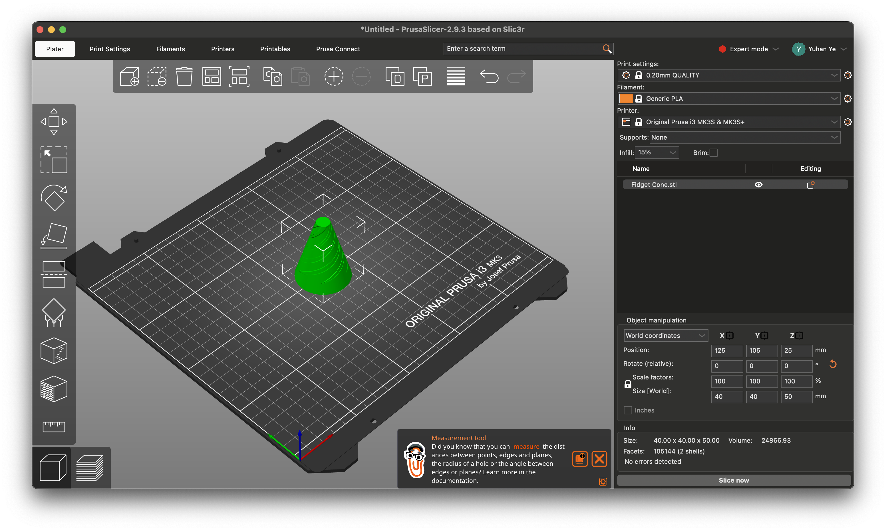

Week 5: 3D Design & Printing
Assignment: 3D Printed Fidget Cone
For this week's assignment, besides experimenting with 3D printing, I also wanted to enhance my modeling skills in Fusion 360. I followed a YouTube tutorial on how to model a fidget cone, which mainly uses circular patterns and allowed me to explore new tools like the Sweep function. Through this exercise, I became more comfortable navigating different modeling features and began to understand how geometric repetition can be used creatively in design.
Download STL fileDownload sliced gcode file 